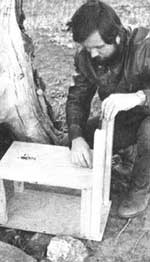
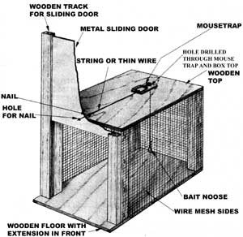

Here's a way to catch henhouse marauders without harming a hair on their furry little bods.
You say there's a weasel dining on your chickens? A raccoon's growing fat on the eggs? Squirrels are gnawing through your roof, rabbits are eating all the lettuce from your garden, and a porcupine is sharpening its teeth on your truck's tires? And because of all that your thoughts are growing ever darker ... you have murder in your heart ... but, when it comes right down to it, you just can't bear to hurt the pesky rascals?
Well, you'd better get off dead center and do something.
You might try running about your place at odd hours of the night, wearing a flowing white nightie and banging on a pie pan with a hammer. Or perhaps you should take up playing the flute and Pied Piper the furry rustlers over yon far hill.
Or you might want to livetrap the bothersome little dears and release them miles away (say, for instance, near the home of the president of your local utility company).
But you've seen live traps advertised, and you know they're expensive. You can't afford one? All right. I'll show you how to build your own for nothing (or maybe for $5, depending on the health of your scrap pile). It'll take only a few hours to whop together, and the first step is to ...
BUILD A BOX
The size of the box is up to you. Just make it big enough to accommodate the largest animal you intend to catch. But, as a practical matter, don't build a trap that's much bigger than you need. I like a cage 12" high by 12" wide by 18" deep. With that size, I can capture anything from a squirrel to a raccoon without fear of harming the prisoner.
To start, you'll need four corner posts, each 12" long (if you're planning to build 'my" size). I use 2 X 2 pine, but 2 X 4's will work just as well. Any lumber or plywood at least 1/2" thick will work for the top and bottom (roof and floor) of the box. Cut the top piece 12" wide by 18" long, and the bottom panel 12" wide by 20" long. With the four corner posts and the top and bottom pieces cut, assemble the basic box, letting the extra 2" of the 20" bottom board extend on one end-that end is hereby designated as the front-and nail the whole thing together.
Next, scavenge or buy some 1/4" wire mesh (often called "hardware cloth"), preferably galvanized. Plain old screen wire will do if you're after nothing larger or more ferocious than squirrels. Staple or tack the wire to both sides and one end (the back ... where the 2" extension isn't), as shown in the accompanying illustration.
Now, with only the front remaining open, it's time to ...
BUILD A TRAPDOOR
The door opens and closes the front of the box by sliding up and down in a vertical track. My favorite material for that track is tongue-and-groove oak flooring, but a workable facsimile can be made by sawing grooves longitudinally into the edges of any two pieces of 3/4" or thicker board. Either way, you'll need two pieces of stock, each about 2" wide and 24" long. Nail these to the front of the box, their bottoms resting on the 2" extension of the bottom, with the grooved sides facing inward. Be careful to get them exactly the same distance apart at the top and bottom, so the door won't hang up when dropping closed.
The best door material is galvanized sheet metal: 22-gauge is ideal. Visit your local sheetmetal shop and beg a scrap about 11" wide and 14" high. (Other salvageables will work, too: a piece of your spouse's favorite cookie sheet, the sheet-metal part of a real estate sign that's cluttering up your neighborhood, etc.) When you get home with the makings for the door-whatever material you come up with-cut it to about 14" high and just wide enough to fit nicely between the grooves of your track boards. It must slide up and down freely. When the door fits and works to your satisfaction, lift it out and drill a hole in it, say 1/4 " or so in diameter, about 1" up from the bottom and centered from side to side, as shown in the drawing.
Now you're ready to ...
BUILD THE SPRINGING MECHANISM
Appropriately enough, the driving force behind this apparatus is a mousetrap (unless you're building large enough to capture a bear, in which case maybe a rattrap would be in order). Using either screws or small nails, attach the trap-unset and with the bail (that's the mouse-basher) facing toward the back-to the top of the box, centered from side to side and located 3" to 4" from the back, as shown in the illustration.
When it's anchored securely, set the trap (watch your fingers!) and measure the distance from the end of the bail to the slide-down door. You'll need a piece of string or thin wire 1" or so longer than that, so go fetch it. And while you're at it, you might as well get a bigheaded nail, too, not over 4" long. Tie one end of the string or wire to the nail, just behind the head. Have the neighborhood brat spring the mousetrap, and tie the other end of the string or wire to the bail. Good. Now drill a 1/4"-diameter hole through the mousetrap-boring it as close to the front of the trap's bait pan as you can-and right on through the top of the box, as shown.
Scrounge another string, this one measuring about 8" long (fishing line works well), and tie a slipknot in one end (or a hangman's noose, if you're so inclined) to hold the bait. Run the other end of the 8" string up through the hole you drilled near the mousetrap's bait pan, and tie that end to the bait pan itself. Refer to the drawing to be sure you've got this part right.
That's it! You're finished with all the building chores (unless you want to add a couple of carrying handles, or camouflage the box with chicken-color paint). Now it's time to ...
TEST THE TRAP
This is the big moment! Make like you're a weasel, a bunny, or whatever it is you hope to catch. Set the trap by cocking the mousetrap and carefully inserting just the tip of the nail into the hole in the bottom of the raised door. Now hop or slink up to the trap, sniff the air, then dart away and cower under a bush. Approach again. Stay a little longer this time, then scurry back to cover. Repeat. Finally, stay near the trap, sniffing all around, curious and unsuspecting. Look into the open front of the box. See the carrot. Quiver with anticipation. (If you're being a weasel, envision a drumstick, but still quiver.) Your head won't fit inside, you find, so reach your arm in and give a light tug on the carrot or drumstick.
Whap. The mousetrap's bail smashes down where a mouse isn't, violently jerking the string tied to the trigger nail, which exits abruptly from its hole in the sliding door ... which promptly drops guillotine-like on your arm. It works, and what's more, now you know that the falling door is harmless, should it catch the culprit amidships.
TRAPPING LORE
Bait and set your trap, then go away and leave it alone for a while. (Be sure to use a bait that your intended captive is known to fancy, since the trap will be competing for attention with your poultry and garden.) Most catches will probably be made at night, and it may take several days for the human smell to wear off a new trap sufficiently to suit a weasel. If you won't be able to relocate your quarry immediately after making a catch, place the trap in the shade. And never leave an animal in the trap any longer than is absolutely necessary.
When you do transport your temporary charge to its new home, drive several miles if it's a weasel, about a mile for a rabbit ... and at least halfway around the world if it's a neighborhood cat. You might try just releasing a raccoon on the spot, since one such experience is usually enough to keep most of these masked bandits away from your digs (If the critter does return, though, it'll be a lot wiser for the experience and much harder to recapture.) If you find a female animal in your live trap, consider whether she might have a litter waiting nearby, helpless without her. (If this is of concern to you, dor in the springtime.)
Use caution when releasing weasels and like-tempered varmints. Yank the door open from behind and run as if the devil's on your tail ... because he may be!
GOING COMMERCIAL
If all goes well with your trap building and live-catching and relocating, you might want to expand into peddling your customcrafted traps - and/or trapping services - to beleaguered neighbors. (You can even drum up extra business by strategically releasing the pests you catch!)
But I must prepare you for one possible problem: The unhappy day may come when you set a trap for a raccoon, say, but catch a skunk instead. Since your naive, city-type brother-in-law isn't around to trick into doing the releasing chores, what do you do now?
Well, you consider your limitations, that's what. And then, knowing you can't runn that fast, and knowing you can't wish the thing away, you do some hard thinking-and come up with the proverbial better skunk trap!
EDITOR'S NOTE: Someone already has come up with "A Safe Skunk Trap, " and you can read about it-under that exact title-in MOTHER NO. 64, page 152.
NOTE: If you prefer not to cut this page, you may order on a separate sheet of paper.
Please mention MOTHER when you do.
|
 |
 |
|